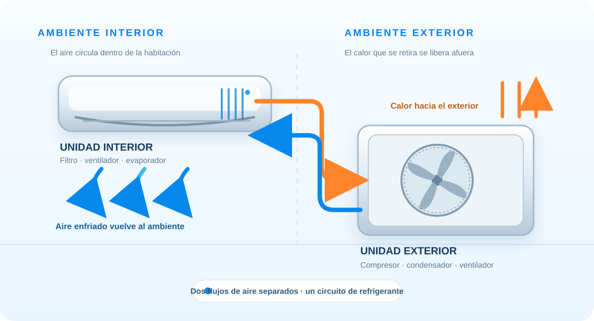

Absorción interior
El refrigerante frío circula por el evaporador y absorbe calor del aire que mueve el ventilador interior.
Seguí el recorrido del calor y del aire para comprender qué hace cada parte de un equipo y cómo se relacionan temperatura y humedad.

Abrí cada tema cuando quieras y avanzá a tu ritmo.
Un aire acondicionado modifica las condiciones del aire de un espacio. En refrigeración, reduce su temperatura y, en muchos equipos, también retira parte de su humedad. No crea frío: extrae calor del interior y lo expulsa al exterior.
El equipo enfría el aire al hacerlo pasar por una superficie interior más fría que el ambiente.
El ventilador impulsa el aire por la habitación y lo hace circular por la unidad interior.
El control de humedad depende del equipo, su capacidad, el caudal de aire y las condiciones del ambiente. En un split común, la unidad interior recircula el aire existente; no necesariamente incorpora aire exterior.
El refrigerante frío circula por el evaporador y absorbe calor del aire que mueve el ventilador interior.
El compresor recibe vapor refrigerante y eleva su presión y temperatura usando energía eléctrica.
En el condensador, el refrigerante libera al exterior el calor recogido dentro y el aporte del compresor.
El dispositivo de expansión reduce la presión del refrigerante y lo prepara para absorber calor otra vez.
El ciclo se repite mientras el control pide enfriamiento y las condiciones de funcionamiento lo permiten.
En un split conviven dos recorridos separados. Entender esta diferencia ayuda a leer el esquema y a evitar la idea equivocada de que el equipo simplemente “manda aire frío” desde afuera.
El ventilador interior toma aire de la habitación, lo hace pasar por el filtro y el evaporador, y lo devuelve más frío. El aire exterior pasa por la unidad exterior.
El fluido circula entre las unidades por tuberías. Absorbe calor en el serpentín interior y lo libera en el exterior; no se mezcla con el aire de la habitación.
Las tuberías, el cableado y el drenaje conectan funciones distintas: el refrigerante transporta energía, la electricidad alimenta y controla el equipo, y el drenaje conduce el agua condensada.
Contiene filtro, ventilador y evaporador. Distribuye el aire y transfiere calor desde la habitación al refrigerante.
Impulsa el refrigerante por el circuito y eleva la presión del vapor para que pueda liberar calor afuera.
Aloja el condensador y su ventilador. Ayuda a transferir al ambiente exterior el calor retirado del interior.
Regula el paso del refrigerante hacia el evaporador y provoca la caída de presión necesaria para el ciclo.
Miden condiciones y coordinan el funcionamiento para acercarse al ajuste elegido.
El filtro retiene parte de las partículas del aire. El drenaje evacua el agua que se forma en la unidad interior.
El aire contiene vapor de agua. Cuando toca el evaporador y se enfría lo suficiente, parte de ese vapor puede convertirse en gotas sobre el serpentín. Esas gotas caen a una bandeja y salen por el drenaje.
El intercambio de calor baja la temperatura del aire que atraviesa el evaporador.
Al condensarse parte del vapor de agua, el equipo reduce la humedad del aire recirculado.
El resultado cambia con la humedad, la temperatura, el caudal de aire y el tiempo de funcionamiento. Enfriar mucho no siempre significa quitar humedad de forma adecuada; el confort depende de ambas condiciones.
Los nombres y opciones del control cambian según el modelo. Un equipo solo frío no puede calentar mediante el ciclo de refrigeración.
Separa la unidad interior de la exterior; es habitual en viviendas y espacios pequeños.
Una unidad exterior se conecta a varias unidades interiores compatibles.
Integra los componentes principales en una sola carcasa instalada en una abertura.
Se ubica dentro del ambiente y expulsa calor mediante un conducto hacia el exterior.
Distribuye aire acondicionado a varios espacios mediante una red de conductos.
Puede trasladar calor en ambos sentidos y ofrecer refrigeración y calefacción.
La elección depende del espacio, su aislamiento, el clima, la distribución, el uso y la capacidad del equipo. No existe un único tipo ideal para todos los ambientes.
La capacidad necesaria depende, entre otros factores, del tamaño y orientación del espacio, las ventanas, el aislamiento, las personas, los equipos que generan calor y el clima. Un equipo mal dimensionado puede dar un confort deficiente o funcionar de forma poco conveniente.
Mantené libres las entradas y salidas de aire, y evitá bloquear las unidades con cortinas, muebles u objetos.
Usá el filtro y las tareas de limpieza indicadas para tu modelo. La revisión de circuitos eléctricos o refrigerantes corresponde a personal calificado.
Sellar filtraciones y reducir el ingreso directo del sol puede ayudar a mantener el confort. El valor elegido en el control no cambia la velocidad con que el equipo puede enfriar cualquier ambiente: el resultado depende de la carga térmica y de la capacidad disponible.
Respuestas: lo retira del ambiente interior y lo libera afuera; no, los recorridos de aire permanecen separados; parte del vapor de agua se condensa en la superficie fría; el equipo reversible invierte el recorrido térmico.